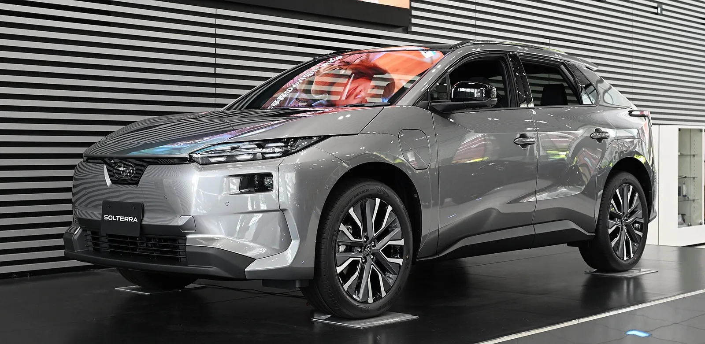
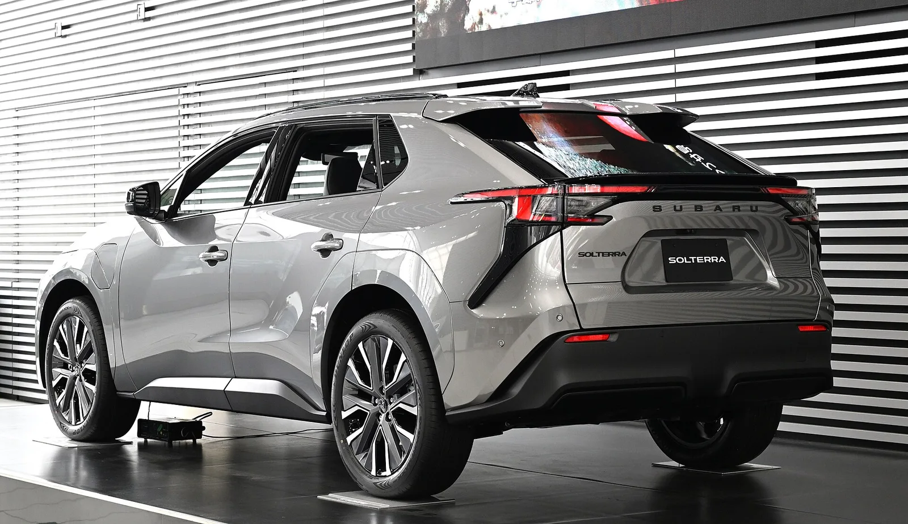

▲ 렉서스 RZ. 이번 리콜 대상 2만991대 중 4,739대가 RZ다
토요타 bZ, 렉서스 RZ, 스바루 솔테라.
브랜드가 셋인데 리콜은 하나입니다.
세 차가 같은 플랫폼과 같은 배터리 제어장치를 쓰기 때문입니다. 미국에서 2만991대가 대상이며, 문제는 주행 중 구동력이 끊길 수 있다는 것입니다.
1. 브랜드 셋, 리콜 하나
이번 리콜의 구조를 이해하려면 먼저 이 세 차의 관계를 봐야 합니다.
| 모델 | 대수 | 브랜드 |
|---|---|---|
| 토요타 bZ | 11,495대 | 토요타 |
| 렉서스 RZ | 4,739대 | 렉서스 |
| 스바루 솔테라 | 4,757대 | 스바루 |
| 합계 | 20,991대 | |
세 차는 토요타의 전기차 전용 플랫폼 e-TNGA를 공유합니다. 그리고 같은 고전압 배터리 ECU를 씁니다. 부품이 같으니 결함도 같이 옵니다.

▲ 스바루 솔테라. 토요타 bZ와 형제차로, 같은 플랫폼과 같은 배터리 제어장치를 쓴다 ⓒ Wikimedia Commons
플랫폼 공유는 개발비를 나누는 방법이지만, 리스크도 함께 나눕니다. 이번 건은 그 구조가 그대로 드러난 사례입니다.
2. 원인 — 반도체 두 개가 같은 자리를 쓴다
고전압 배터리 ECU 안에는 집적회로가 두 개 들어 있습니다. 하나는 배터리를 제어하는 IC, 다른 하나는 그 상태를 감시하는 IC입니다.
문제는 이 둘이 메모리 주소의 일부를 공유한다는 점입니다.
📍 어떻게 고장으로 이어지나
특정 조건에서 감시용 IC가, 제어용 IC가 방금 써넣은 데이터를 반복해서 덮어씁니다. 그러면 메모리가 정상 동작 점검을 통과하지 못하고, 시스템은 이를 이상으로 판단합니다. 그 결과 구동계로 힘이 전달되지 않게 됩니다.
부품이 물리적으로 망가진 것이 아니라 소프트웨어가 메모리를 다루는 방식의 문제입니다. 그래서 조치도 소프트웨어입니다.
3. 무엇이 멈추고 무엇이 남나
"주행 중 출력 상실"이라는 표현은 무섭게 들리지만, 정확히 무엇이 멈추는지 구분해 볼 필요가 있습니다.
| 기능 | 상태 |
|---|---|
| 구동력 | 끊길 수 있다 |
| 파워스티어링 | 계속 작동 |
| 제동 보조 | 계속 작동 |
조향과 제동이 살아 있다는 점이 중요합니다. 차를 통제한 채로 갓길에 세울 수 있다는 뜻이기 때문입니다. 다만 고속도로 합류나 추월 중에 발생하면 상황이 달라집니다. 그래서 리콜 대상이 됐습니다.

▲ 토요타 bZ. 대상 2만991대 중 절반이 넘는 1만1,495대를 차지한다 ⓒ Wikimedia Commons
4. 조치와 일정
| 항목 | 내용 |
|---|---|
| 조치 | 공식 딜러에서 배터리 ECU 소프트웨어 업데이트 |
| 비용 | 무상 |
| 소유자 통지 | 2026년 8월 3일부터 우편 발송 |
| 캠페인 번호 | NHTSA 26V393 |
차대번호로 리콜 대상 여부를 직접 확인할 수 있습니다. 미국 등록 차량이라면 NHTSA에서 조회됩니다. NHTSA 리콜 조회
5. 국내에는 어떤 의미인가
이번 리콜은 미국 시장 기준입니다. 국내 대상 여부와 대수는 별도로 공지돼야 확인됩니다.
다만 국내와 무관하지 않습니다. 렉서스 RZ는 국내에서 판매 중이며, 렉서스코리아가 파는 유일한 순수 전기 SUV입니다. 슈프림 8,480만 원, 럭셔리 9,250만 원에 팔리고 있습니다.
✅ 국내 RZ 차주라면
· 국내 리콜 공지가 나오는지 자동차리콜센터에서 확인
· 차대번호로 조회하면 미조치 리콜이 함께 나옵니다
· 소프트웨어 업데이트이므로 입고 시간은 길지 않습니다
· 통지서를 못 받았더라도 대상이면 무상입니다
국내 리콜 대상 여부는 자동차리콜센터에서 차대번호로 조회할 수 있습니다. 자동차리콜센터 바로가기
6. 플랫폼 공유의 양면
e-TNGA는 토요타가 전기차 시대에 맞춰 만든 전용 플랫폼입니다. 여기서 bZ가 나오고, 렉서스 배지를 달면 RZ가 되고, 스바루와 공동 개발한 버전이 솔테라가 됩니다.
이 방식은 개발비와 부품 단가를 크게 낮춥니다. 세 브랜드가 하나의 개발 결과를 나눠 쓰기 때문입니다.
대신 결함도 세 배로 퍼집니다. 배터리 ECU 하나의 메모리 처리 방식 때문에 브랜드 셋이 동시에 리콜에 들어간 것이 이번 사례입니다. 최근 자동차 산업에서 리콜 규모가 커지는 이유이기도 합니다.

▲ 같은 부품을 쓰면 개발비가 줄지만, 결함이 생기면 브랜드를 넘어 번진다 ⓒ Wikimedia Commons
7. 정리
토요타 bZ·렉서스 RZ·스바루 솔테라 2만991대가 미국에서 리콜됩니다. 배터리 ECU 안의 두 반도체가 같은 메모리 주소를 공유해, 데이터가 덮어써지면 주행 중 구동력이 끊길 수 있습니다.
조향과 제동 보조는 유지됩니다. 조치는 소프트웨어 업데이트이고 무상입니다.
국내 RZ 차주는 별도 공지를 확인하는 편이 좋습니다. RZ는 렉서스코리아가 파는 유일한 순수 전기 SUV입니다.